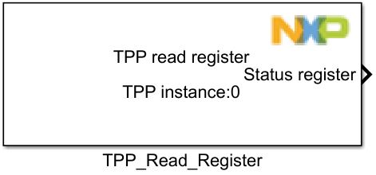
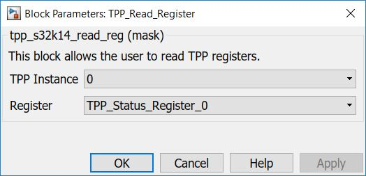

TPP Read Register Block
This block is used to read registers of the TPP.
Block Image
Inputs:
- None
Outputs:
- Data from a specified register.
Parameters and Dialog Box
The block has two parameter:
Instance
Selects the TPP instance to be used.
Note:Currently limited to only 1 instace (#0).
Register
Available register selections.
Block Dependency
Please do the following:
- Configure the TPP Configuration block.
- Configure the LPSPI Configuration block.
Block Miscellaneous Details
* Read Hardware Manual documentation to get more information (GD3000).